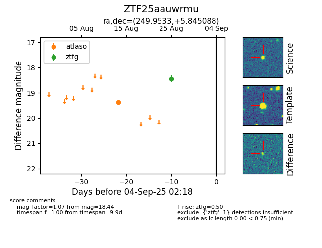

FINK: ZTF25aauwrmu
Lasair: ZTF25aauwrmu
ALeRCE: ZTF25aauwrmu
ZTF25aauwrmu (ztf,fink)
equatorial (ra, dec) = (249.9533,+5.84509)
galactic (l, b) = (22.3655,+31.83143)

last atlaso=19.37, ztfg=18.44
1 atlaso, 1 ztfg detections